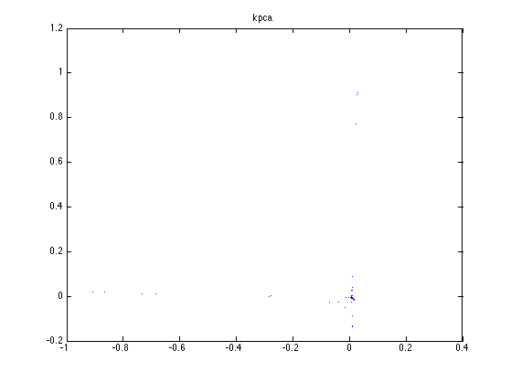
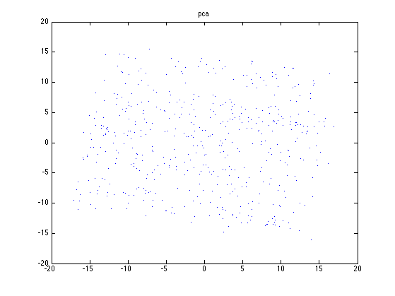

Kpca demo
setSeed(0); %{ % Make data on a 2d circle (from stprtool/data/gencircledata.m) num_data = 500; Center = [0;0]; R = 10; phi = 2*pi*rand(1,num_data); gnd_X = repmat(Center,1,num_data)+R*[cos(phi);sin(phi)]; gnd_y = ones(1,num_data); % add noise dev = 1; X = gnd_X + randn(2,num_data)*dev; X = X'; % rows are cases figure; plot(X(:,1), X(:,2), '.') %} % Make 3d swiss role data (from drtoolbox/generate_data) n = 500; noise = 1; t = (3 * pi / 2) * (1 + 2 * rand(n, 1)); height = 30 * rand(n, 1); X = [t .* cos(t) height t .* sin(t)] + noise * randn(n, 3); %labels = uint8(t); labels = rem(sum([round(t / 2) round(height / 12)], 2), 2); t = [t height]; % KPCA %[mappedX, mapping] = kernel_pca(X, no_dims, varargin) Zkpca = kpcaSimple(X',2); % RBF kernel, sigma=1 figure; plot(Zkpca(1,:), Zkpca(2,:), '.') title('kpca'); % PCA [B, Zpca, evals, Xrecon, mu] = pcaPmtk(X, 2); figure; plot(Zpca(:,1), Zpca(:,2), '.') title('pca'); 